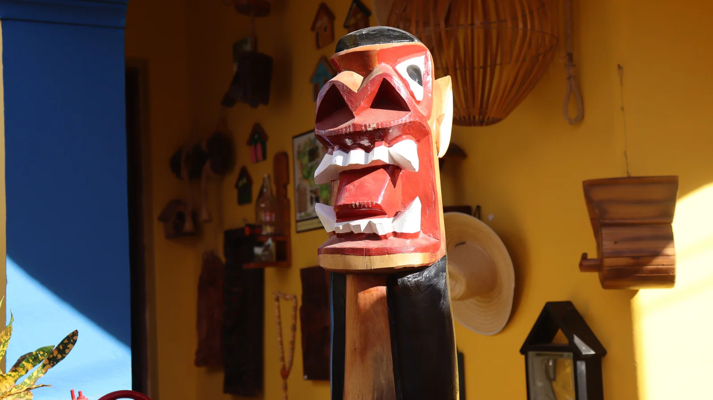

Sobre o local
O Museu de Carrancas reúne em seu acervo mais de 20 exemplares das tradicionais esculturas que, historicamente, eram fixadas na proa das embarcações que navegavam pelo Velho Chico. Associadas à proteção dos navegantes, as carrancas tinham a função de afastar os maus espíritos, proteger contra os perigos das águas e garantir viagens seguras.
No museu, o visitante conhece o talento dos mestres carranqueiros de Januária e de outras cidades ribeirinhas, além de descobrir os diferentes estilos e características dessas esculturas. Entre os destaques está um exemplar produzido pelo Mestre Guarany (1882-1985), de Santa Maria da Vitória (BA), reconhecido internacionalmente como o maior e mais importante escultor de carrancas do Rio São Francisco.
O acervo também permite conhecer as características que distinguem a carranca de Januária da carranca de Pirapora e da carranca nordestina, revelando a diversidade dessa importante expressão da cultura barranqueira. Instalado no interior da loja Alma Barranqueira, o museu é o primeiro espaço museológico de Minas Gerais dedicado exclusivamente às carrancas.
Informações sobre o local
Endereço: Praça Artur Bernardes, 26 - Centro, (em frente à Casa da Memória)
Horário de funcionamento: Segunda a sexta-feira, de 9h às 18h e sábado de 9h às 13h
Contato: (38) 99738-1340 (WhatsApp)
Tipo de visita: Visita livre
Formas de pagamento: Entrada gratuita
Pet-Friendly: Verificar
Mais informações: Instagram Alma Barranqueira